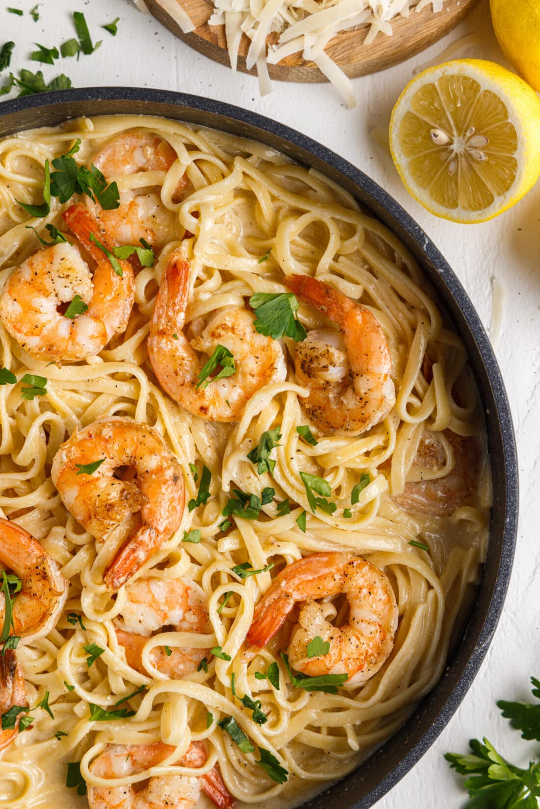

Shrimp Pasta

Description
Shrimp pasta with a buttery lemon garlic sauce is a
delicious and flavorful dish that offers a variety of
health benefits. Shrimp is a low-calorie and high-protein
seafood option that is rich in essential nutrients such as selenium,
vitamin D, and vitamin B12. It is also a good source of omega-3 fatty
acids, which are important for heart health and brain function.
Pasta provides carbohydrates, which are essential for energy and
fueling the body. Whole-grain pasta varieties are also rich in fiber,
which can help promote digestion and reduce the risk of chronic diseases
such as heart disease and diabetes. The buttery lemon garlic sauce adds
a burst of flavor and richness to the dish, while garlic has been shown
to have anti-inflammatory and immune-boosting properties.
Ingredients
- 3/4 lb jumbo shrimp raw, deveined
- salt and pepper to taste
- 1/2 cup unsalted butter divided
- 4 cloves garlic minced
- 4 Tbsp lemon juice fresh, about 2 lemons
- 1/3 cup heavy cream
- 1/3 cup parmesan freshly grated
- 8 oz linguini pasta
- fresh parsley chopped, for garnish
Steps
- Prepare shrimp by thawing completely (if frozen) and making sure they are peeled and deveined. Place shrimp on a few layers of paper towels and blot with additional paper towels so that they are as dry as possible.
- Sprinkle salt and pepper over both sides of the shrimp.
- Bring a large pot of salted water to a boil and cook linguini to desired tenderness. Reserve one cup of the pasta water and drain pasta the rest of the way.
- Meanwhile, melt 4 tablespoons of butter in a large saucepan or skillet over medium heat. Add the garlic to the pan and saute for about 30 seconds.
- Add shrimp to the pan in a single layer. Allow them to cook without stirring until they are fully pink and slightly golden brown on one side (about 2 minutes). Quickly flip to the other side and continue cooking another 1-2 minutes until they are pink/opaque all the way through. Immediately remove from skillet.
- Melt the remaining 4 tablespoons of butter in the same pan. Add lemon juice and whisk in heavy cream. Bring the sauce to a low simmer.
- Add parmesan cheese and whisk until sauce is smooth and cheese is fully melted.
- Add cooked pasta and up to 1 cup of reserved pasta water into the sauce. Stir to coat pasta. Add the shrimp back into the pan just long enough to reheat gently.
- Serve immediately with lemon wedges, chopped parsley, and a sprinkle of parmesan cheese, if desired.